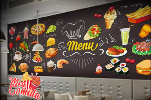

Meu Comida

Entra em todas as cidades sul Catarinenses
Ofertas especiais
Encontre todos os restaurantes, lanchonetes e hamburguerias em nosso aplicativo,
com preços exclusivos, entregas rapidas,
tudo muito Simples e fácil de usar.
Clique no botão abaixo para encontrar os melhores restaurantes:
Acesse